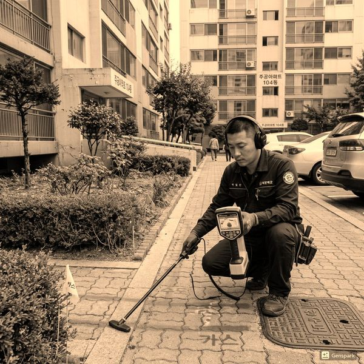
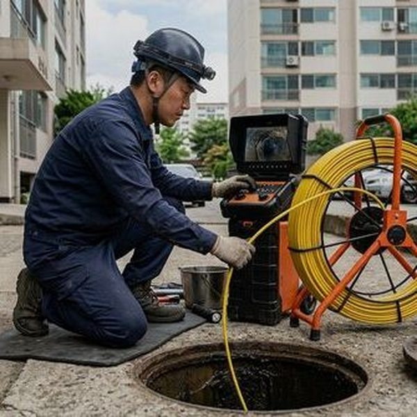

입주 전 배관 점검이 중요한 이유
신축 아파트라도 배관 시공 불량은 빈번하게 발생합니다. 입주 후에 발견하면 이미 마감재가 시공된 상태여서 수리 비용과 불편이 크게 늘어납니다. 입주 전 사전점검 기간에 배관 상태를 꼼꼼히 확인하면 하자보수를 시공사에 요구할 수 있습니다. 특히 배수 테스트, 수압 테스트, 배관 연결부 누수 확인은 필수입니다. 제우스시설관리에서는 신축 아파트 입주 전 배관 전문 점검 서비스를 제공합니다. 전문 장비로 눈에 보이지 않는 내부 상태까지 확인하여 하자를 사전에 발견합니다.

필수 배관 점검 항목 10가지
입주 전 반드시 확인해야 할 배관 항목은 다음과 같습니다. ①주방 싱크대 배수 속도 ②화장실 세면대 배수 속도 ③변기 물내림 및 배수 ④욕조/샤워 배수 속도 ⑤세탁기 배수구 연결 상태 ⑥에어컨 배수 연결 ⑦각 수전의 수압과 온수 온도 ⑧배관 연결부 누수 여부 ⑨배수구 트랩의 봉수 상태 ⑩발코니 배수구 작동 여부. 각 배수구에 물을 충분히 흘려보내고 하부 배관 연결부에서 물이 새는지 확인하세요. 수압은 모든 수전을 동시에 열었을 때도 적정 수준인지 테스트합니다. 문제 발견 시 제우스시설관리에 연락하시면 전문 진단을 도와드립니다.

자주 묻는 질문
Q. 신축 아파트 하자보수 기간은 얼마인가요?
A. 배관 관련 하자보수 기간은 일반적으로 입주 후 2~3년(건축법 기준)이며, 구조적 하자는 최대 10년까지 보수 청구가 가능합니다.
Q. 입주 전 점검을 전문 업체에 맡기면 비용은?
A. 전문 점검 비용은 세대당 15~30만원 수준이며, 하자를 조기에 발견하면 훨씬 큰 수리비를 절약할 수 있습니다.